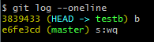

#git常用的命令
Git 与 SVN 区别
GIT不仅仅是个版本控制系统，它也是个内容管理系统(CMS),工作管理系统等。
如果你是一个具有使用SVN背景的人，你需要做一定的思想转换，来适应GIT提供的一些概念和特征。
Git 与 SVN 区别点：
- 1、GIT是分布式的，SVN不是：这是GIT和其它非分布式的版本控制系统，例如SVN，CVS等，最核心的区别。
- 2、GIT把内容按元数据方式存储，而SVN是按文件：所有的资源控制系统都是把文件的元信息隐藏在一个类似.svn,.cvs等的文件夹里。
- 3、GIT分支和SVN的分支不同：分支在SVN中一点不特别，就是版本库中的另外的一个目录。
- 4、GIT没有一个全局的版本号，而SVN有：目前为止这是跟SVN相比GIT缺少的最大的一个特征。
- 5、GIT的内容完整性要优于SVN：GIT的内容存储使用的是SHA-1哈希算法。这能确保代码内容的完整性，确保在遇到磁盘故障和网络问题时降低对版本库的破坏。
Git常用命令
git init 初始化本地创库 git init dir_name 指定目录作为本地创库
git add file_name / . 将文件添加至暂存区
git commit -m “message”将文件存放进仓库 如果不加 -m 会进入编辑消息界面 window下（esc + ZZ退出）
git status 查看继上次提交后有没有修改 -s 简短输出
git diff 命令显示已写入缓存与已修改但尚未写入缓存的改动的区别
git -rm file_name 删除工作目录的file_name文件
git -rm -f file 如果删除前已经修改并放入暂存区中需要 -f强制删除
git -rm --cached file 从暂存区中删除 但是希望工作目录中还存在
git mv 用于移动或重命名文件
git clone repo dir 克隆仓库的到本地文件目录dir下
git remote add 远程地址名称 地址 添加远程地址
git push 远程地址 master 将最新的master发送给远程仓库
git pull 拉取远程仓库并合并
git fetch 拉取不合并
#git分支命令
git branch 分支名称 创建分支 git branch -b 分支名称 一般用这种方法创建后切换到创建的分支
git branch 查看分支
git checkout 分支名称 切换分支 当你切换分支的时候，Git 会用该分支的最后提交的快照替换你的工作目录的内容
git merge 分支名称 合并分支到master 分支若出现冲突手动更改后 git add file
git branch -d 分支名称 删除分支
git log 查看提交历史 --oneline简洁显示

git log --oneline --graph 查看历史并且显示何时出现分支 何时合并

git log -- reverse --oneline 逆向显示历史
git log --author=名称 --oneline 根据作者查看记录
git log --oneline --before={3.weeks.ago} --after={2010-04-18} 指定时间查看
git tag -a v1.0 当达到一个重要阶段我们希望记住他 可以使用其为这个点打上标签 -a创建一个带注解的标签
git reset head file 相当于取消git add file操作
git reset --hard 版本号 回退到某个版本 提交需使用 git push -f 强制提交 因为会退到历史版本比远程仓库的版本低 需要强制提交